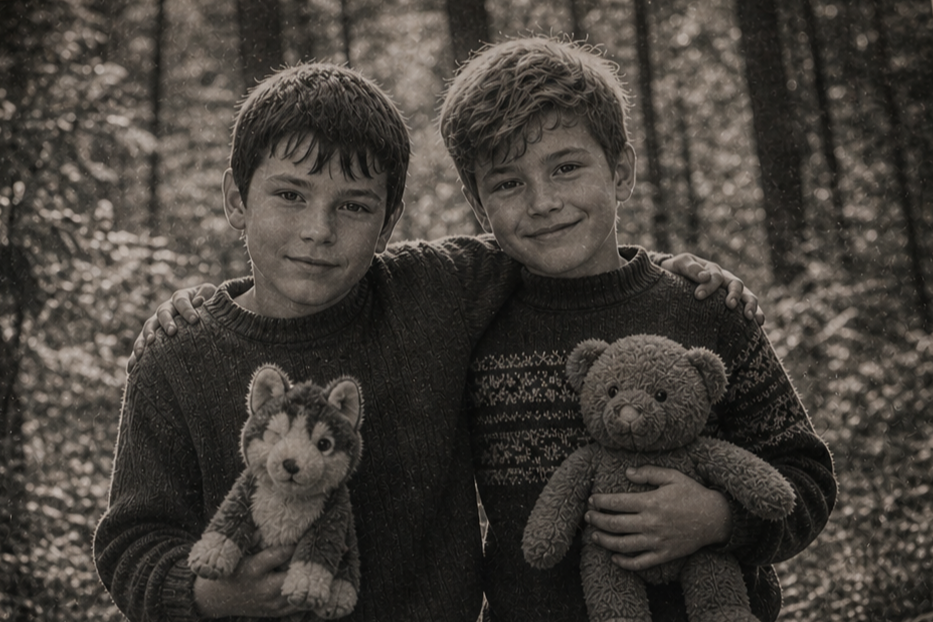

Тайна Чернолесья — кто что знает?
Ребят, наткнулся на упоминание о какой-то странной истории, связанной с Чернолесьем. Говорят, там когда-то был утерян некий артефакт или что то типа того, и якобы кто-то его находил. Звучит как байка, но уж слишком часто встречаю намёки. Кто-нибудь в курсе, что это вообще за история?
Слушай, тоже что-то такое слышал краем уха. Типа не просто артефакт, а типа какая то вещь для особенного человека? Но деталей вообще не знаю. Поддерживаю вопрос, интересно, что там на самом деле.
История не такая древняя, как обычно рассказывают.
На самом деле всё началось уже в 2000-х.
Двое пацанов, друзья детства, нашли в лесу странную вещь. Наткнулись случайно, просто шарились по старым тропам.
До этого про неё только слухи ходили — мол, «в лесу что-то есть», но никто всерьёз не воспринимал.
А тут — реальная находка.
И что в ней было странного? Ну нашли и нашли, мало ли хлама в лесу.
Вот в том и дело, что на первый взгляд — ничего.
Обычная вещь. Без каких-то явных «пугающих» признаков.
Если верить тем, кто её видел — наоборот, ничего отталкивающего в ней не было.
Тогда откуда вся эта история?
Из-за того, что началось потом.
Один из них довольно быстро начал вести себя странно.
Стал зацикливаться на этой находке. Постоянно таскал с собой, нервничал, если она пропадала из виду.
И выглядело это так будто он сам вбил себе в голову, что она для него что-то значит.
Типа сам себя накрутил?
Похоже на то.
И что, второй просто смотрел на это?
Нет. В какой-то момент он вмешался.
По слухам — просто спрятал её.
Без разговоров. Понял, что дальше будет только хуже.
После этого всё и сломалось.
Всмысле сломалось? Типа поругались?
Один из них уехал из Чернолесья с семьёй.Резко, без объяснений, вся семья как будто испарилась.
А второй остался.
И вот с ним всё хуже стало. Замкнулся, почти ни с кем не общался. Люди говорили, что он мог часами бродить по лесу.
А родители? Они что, не вмешивались?
Там отдельная история. У того, кто остался, мать была… мягко говоря, странная.
Звали её Агафья. Жила на отшибе.
Кто-то говорил, что она травами занимается. Кто-то — что «чем-то другим».
Про неё вообще слухов много ходило. Половина деревни считала её ведьмой, половина — просто ебанутой.
Но факт в том, что после той истории она стала ещё более закрытой. И сына от людей отгородила.
Подтверждаю. У нас даже говорили, что она знала про эту находку больше, чем остальные.
И якобы сама подогревала у него эту идею, что вещь нужно вернуть.
Слушайте, а есть хоть какие-то доказательства, что это не просто байки?
Есть одна штука.
Я когда-то сохранил фото из старой местной газеты. Оно потом гуляло по форумам.
На снимке как раз те двое. Подростки, лет по 12–13. Стоят на фоне леса.

Подожди… Это реальные люди?
Реальные. Их потом узнали местные.
Имена, правда, редко кто пишет. Но те, кто в теме, понимают, о ком речь.
То есть получается, один уехал, второй остался и… начал сходить с ума?
Если совсем грубо — да.
Но есть момент.
По слухам, тот, кто уехал… не просто так это сделал.
Перед отъездом он якобы что-то спрятал в лесу.
Подожди… То есть предмет сейчас всё ещё там?
Если верить этой версии — да.
И, судя по всему, тот второй до сих пор его ищет.
И всё это из-за одной штуки? Серьёзно?
Теперь даже как-то не по себе стало. Хотелось узнать историю, а получил почти хоррор 😅
Есть детали постраннее…
Например, почему именно один из них начал меняться, а второй — нет.
И почему, по слухам, тот, кто её спрятал, боялся не за себя.